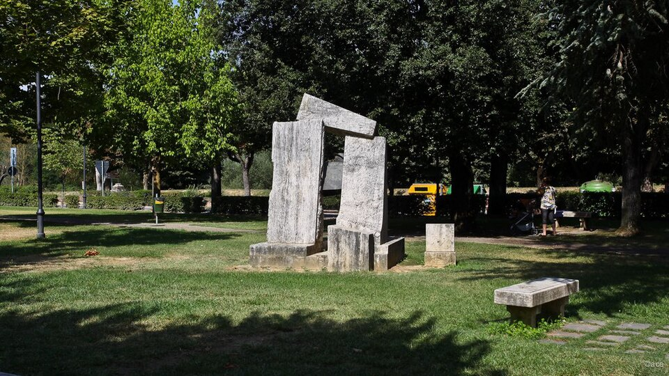
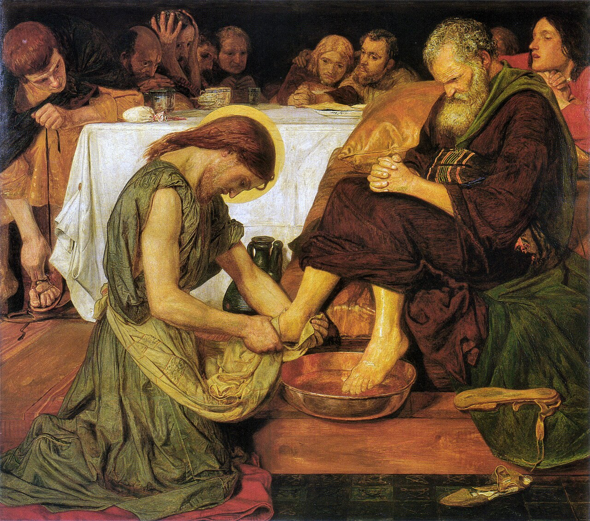

Terrain: south from Siena into the Crete Senesi — bare grey-clay hills, cypress lines, little shade — through Buonconvento, then rising into the Val d'Orcia. Carry water and start early against the heat. Distance and ascent are measured from the day's GPS track.7
The word is made of soil. To be humble is to be close to the ground — and today you will ride all day across it, the grey clay of the Crete, the very humus the virtue is named for.
“When you are invited by any one to a marriage feast, do not sit down in a place of honor… But when you are invited, go and sit in the lowest place, so that when your host comes he may say to you, ‘Friend, go up higher’; then you will be honored in the presence of all who sit at table with you. For every one who exalts himself will be humbled, and he who humbles himself will be exalted.”
Luke 14:8–11 · Revised Standard Version, Catholic Edition1
The Crete Senesi will teach the lesson before you have read it. South of Siena the vineyards thin and the land turns strange and beautiful: bare hills of grey-blue clay, scoured smooth, cypresses standing single against the sky, almost no shade, almost no shelter. It is humbling country in the plainest sense — you are small in it, and it does not pretend otherwise. And its name for its own soil, creta, is a cousin of the word the day is built on: humus, the ground, from which humilitas comes. You will spend the whole day close to the earth the virtue is named for.
Jesus watches guests at a dinner jockeying for the good seats — a scene so ordinary it barely registers as teaching — and turns it into the deep law of the kingdom. Go and sit in the lowest place. This is not a trick for winning honour by feigning modesty; the parable exposes that game too. It is a description of reality: the whole current of God's kingdom runs the opposite way to the current of the world. The world ascends by climbing over others. The kingdom ascends by descending. Everyone who exalts himself will be humbled, and he who humbles himself will be exalted.
Two days ago you rode into towns built entirely to exalt themselves — the towers of San Gimignano, the crown of Monteriggioni. Today you cross a country that cannot be impressed and will not be climbed, that simply asks you to keep turning the pedals close to the ground. It is the more honest landscape for a pilgrim.
Augustine, asked the way to truth, refused to give a list. He gave one word, three times, the way Cicero had said the whole art of the orator was “delivery, delivery, delivery.” The first part is humility; the second, humility; the third, humility. Not because there is nothing else, but because without it everything else — the learning, the discipline, even the good deeds — curdles into pride. Humility is not one virtue among the others. It is the ground they all have to stand on.
Where am I still quietly choosing the place of honour — and what would it cost me, today, to take the lowest seat and mean it?
Today's route, Siena to San Quirico d'Orcia. Map © CyclOSM / OpenStreetMap. Full elevation profile & all stages →
Out of Siena the road drops into the valley of the Arbia and the country empties. This is the Crete Senesi, the “Sienese clays”: rounded grey hills, deep-cut gullies, the occasional isolated farmhouse with its guard of cypresses. It is one of the most photographed landscapes in Italy and one of the least forgiving to cross in July — there is almost no shade, so ration your water and your effort. Around the thirty-fourth kilometre the clay gives way and a brick town appears, gathered behind its walls beside the river.

Photo: ace yee (CC BY-SA 3.0) · Wikimedia CommonsBeyond Buonconvento the road climbs out of the clay and into the Val d'Orcia, greener and more ordered — the landscape of postcards. Through the hamlet of Torrenieri and up the last rise, and San Quirico d'Orcia gathers on its low hill: an old walled town on the pilgrim road, its Romanesque collegiate church of Santi Quirico e Giulitta waiting inside the gate. You have climbed all day by descending — across the humblest ground on the route — and you arrive, as the Gospel promised, higher than you began.
Jesus, knowing that the Father had given all things into his hands, and that he had come from God and was going to God, rose from supper, laid aside his garments, and girded himself with a towel. Then he poured water into a basin, and began to wash the disciples' feet… “If I then, your Lord and Teacher, have washed your feet, you also ought to wash one another's feet. For I have given you an example, that you also should do as I have done to you.”
John 13:3–15, abridged · Revised Standard Version, Catholic Edition2

John frames it with the widest possible camera and then narrows to the smallest possible act. Jesus, knowing that the Father had given all things into his hands, and that he had come from God and was going to God — that is the whole cosmos, the Word through whom everything was made, holding all things — rose from supper, laid aside his garments, and girded himself with a towel. The infinite stoops to the floor. The one who holds all things picks up a basin. This is what God's greatness actually looks like when it comes near: not a throne but a towel, not a command but a servant's job that everyone else in the room was too proud to do.
And Peter cannot bear it. Lord, do you wash my feet? You shall never wash my feet. It sounds like reverence, and it is really the last refuge of pride: I will not be served; I will not be that low before you; let me keep some dignity in this. Jesus is blunt: if I do not wash you, you have no part in me. There is no following him with your dignity intact. To be his, you must first let yourself be knelt before — which is, for most of us, harder than kneeling.
Then he gives the reason, and it is not a feeling but a command with a diagram attached: I have given you an example, that you also should do as I have done. The washing of feet is not a mood of tenderness; it is the shape of the whole life he is handing over. On a shared road this stops being abstract fast. Whose feet, tonight — whose tiredness, whose need, whose unglamorous small service — are you too proud to stoop to? And can you also, like Peter, bear to let the other stoop to yours?
Brethren, the Holy Scripture cries to us saying: “Everyone who exalts himself shall be humbled, and he who humbles himself shall be exalted.”… By that descent and ascent we must surely understand nothing else than this, that we descend by self-exaltation and ascend by humility… The first degree of humility, then, is that a person keep the fear of God before his eyes and beware of ever forgetting it.
Rule of St Benedict, ch. 7, “On Humility” · trans. Leonard J. Doyle OSB4
Benedict gives the longest chapter of his whole Rule to this one virtue, and he begins it with the very verse you read at dawn — everyone who exalts himself shall be humbled. Then he does something strange and beautiful with it. He takes Jacob's dream, the ladder set up between earth and heaven with angels going up and down it, and he says: that ladder is your life. And on it — here is the reversal — we descend by self-exaltation and ascend by humility. The rungs go the wrong way to the world's eye. Every step down in your own estimation is a step up toward God; every grasp upward is a fall.
He then lays out twelve degrees of that descent-which-is-ascent, and the first is the one that governs all the rest: keep the fear of God before your eyes. Not terror — the old, rich word: reverence, the sober awareness that you are always in the presence of the One who made you and sees you, and that you are not the largest thing in the room. Humility, for Benedict, begins there: in remembering, all day, whose ground you are standing on. It is the exact opposite of the tower-builder's forgetting.
And think where you have ended the day: in a small town on a low hill, after crossing a country that could not be impressed, having climbed by staying close to the clay. The Crete gave you the lesson in your legs before Benedict gave it to you in words. The pilgrim road itself is a ladder of the kind he means — it lifts you toward Rome not by exalting you but by wearing you down, day after day, closer to the ground, until the heart is humble enough, as he says, to be raised. Tonight you are one rung nearer, and lower than you started. On this ladder, those are the same thing.
Every quotation is reproduced from the edition named; historical statements are drawn from the references below.